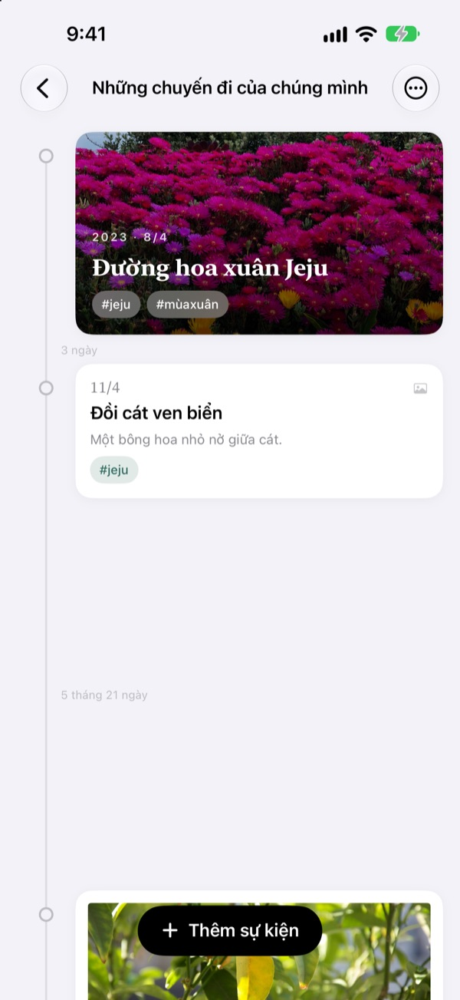
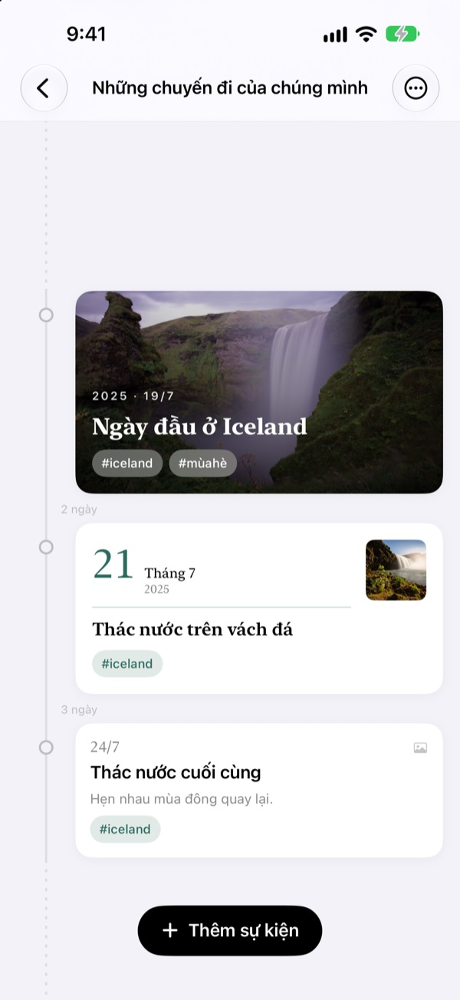
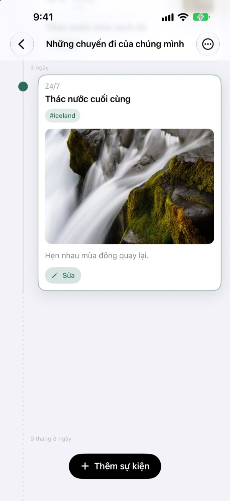
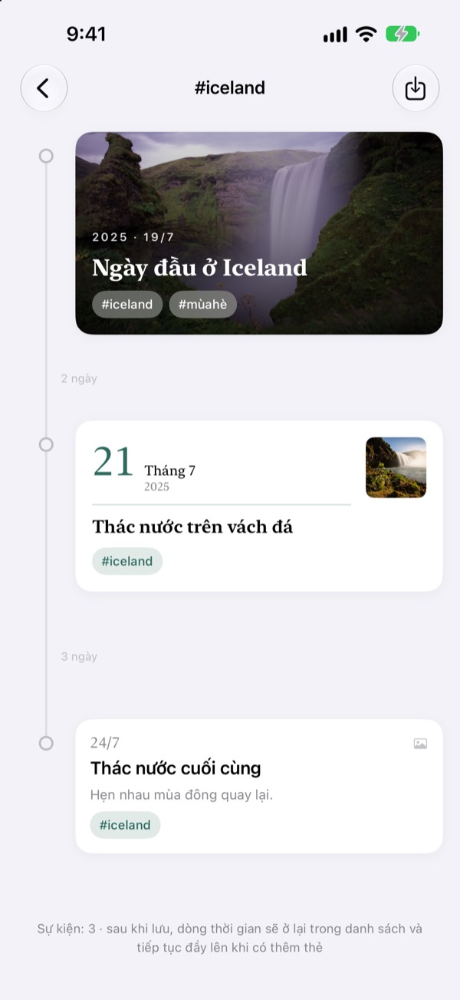
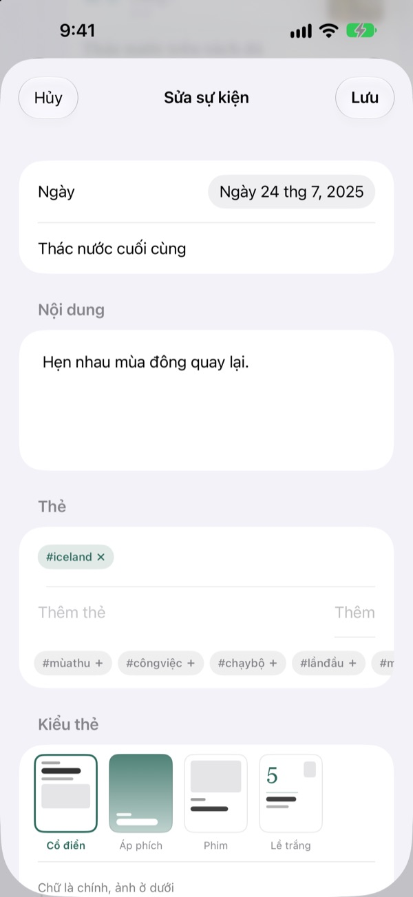

Thời gian trôi bao lâu,
khoảng cách dài bấy nhiêu
3 ngày và 5 ngày cách nhau theo tỉ lệ 3:5. Một quãng trống dài như 2 năm 4 tháng được gập lại thành nét đứt. Chỉ nhìn khoảng cách là thấy thời gian khi ấy đã trôi thế nào.
Mọi tính năng đều miễn phí. Dùng trên iPhone và iPad.

Tự tay kéo giãn khoảng cách
Mỗi nút sẽ thêm một sự kiện sau sự kiện cuối cùng. Khoảng cách được vẽ theo đúng quy tắc của ứng dụng.
Lướt thư viện ảnh mãi cũng không thấy thời gian
Thư viện ảnh chỉ xếp mọi thứ theo ngày, cách nhau 3 ngày hay 2 năm cũng chỉ là một bước như nhau. Yeoul giãn các sự kiện đúng bằng thời gian giữa chúng, nhìn qua là biết giai đoạn nào dày đặc, giai đoạn nào trống trải.
Khoảng cách chính là thời gian
Cả dòng thời gian dùng chung một tỉ lệ, nên cùng một quãng thời gian thì dài như nhau ở bất kỳ đâu trên màn hình. Mỗi khoảng đều ghi thời lượng thật, như 3 ngày hay 5 tháng 21 ngày.
Sự kiện quá gần vẫn có chút khoảng trống, còn quãng nghỉ quá dài thì gập lại thành nét đứt.

Tìm giúp ảnh chụp hôm ấy
Chọn ngày của sự kiện rồi chạm Tìm ảnh liên quan để xem ảnh chụp trong ngày đó. Không có tấm ưng ý? Chạm Tự tìm để tự chọn.
Chạm vào một sự kiện trên dòng thời gian, ảnh và lời kể mở ra ngay tại chỗ.

Một thẻ gom lại những khoảnh khắc rời rạc
Gắn thẻ như #Iceland cho sự kiện rồi chạm vào, mọi sự kiện có thẻ đó từ tất cả dòng thời gian sẽ gom lại thành một dòng mới.
Lưu lại thì nó nằm trong danh sách, và sự kiện gắn cùng thẻ sau này sẽ tự vào.

Mỗi khoảnh khắc một tấm thẻ hợp ý
Cổ điển đặt chữ lên trước, Áp phích phủ kín thẻ bằng ảnh, Phim viền ảnh như ảnh rửa, Lề trắng để con số ngày thật to làm nhân vật chính. Chọn xong là bản xem trước đổi ngay.

Bắt đầu chỉ với 3 bước
- 1
Tạo dòng thời gian
Năm đầu đời của con, chuyện tình, chuyến đi: mỗi chủ đề một cái tên và một màu.
- 2
Thêm sự kiện
Ghi ngày và tiêu đề, kèm một tấm ảnh của hôm đó.
- 3
Gắn thẻ
Các sự kiện cùng thẻ sẽ gom về một chỗ, dù ở dòng thời gian khác nhau.
4 kiểu thiết kế thẻ
- Cổ điển
- Chữ là chính, ảnh nằm bên dưới.
- Áp phích
- Ảnh phủ kín thẻ, tiêu đề lớn đặt lên trên. Không có ảnh thì tô bằng màu của dòng thời gian.
- Phim
- Ảnh có viền như ảnh rửa, kèm chữ máy đánh chữ và dấu ngày.
- Lề trắng
- Con số ngày thật lớn, ảnh nhỏ. Chữ là nhân vật chính.
Sự kiện mới bắt đầu bằng thiết kế giống tấm thẻ gần nhất trong dòng thời gian đó.
Mọi tính năng đều miễn phí
Miễn phí
- Bao nhiêu dòng thời gian cũng được, chọn tên và màu
- Ảnh, lời kể và thẻ cho mỗi sự kiện
- Tìm ảnh chụp trong ngày của sự kiện
- Lưu dòng thời gian thẻ
- 4 kiểu thiết kế thẻ
- Đồng bộ iPhone và iPad qua iCloud
- Ghi lại bằng Phím tắt và Siri
Ủng hộ nhà phát triển
- Chọn mức tip nhỏ, vừa hoặc lớn
- Không mở khóa tính năng nào. Chỉ là một lời cảm ơn
Có trong phần cài đặt của ứng dụng, lúc nào muốn thì gửi.
Không quảng cáo, không gói thuê bao.
Câu hỏi thường gặp
Sao khoảng cách giữa các sự kiện lại khác nhau?
Yeoul giãn các sự kiện đúng bằng thời gian đã thật sự trôi qua. Mọi khoảng đều dùng chung một tỉ lệ, nên 3 ngày và 5 ngày cách nhau theo tỉ lệ 3:5. Sự kiện quá gần vẫn giữ khoảng tối thiểu để không chồng lên nhau, còn quãng trống quá dài thì gập lại thành nét đứt kèm thời lượng thật, như 2 năm 4 tháng.
Tôi không thấy ảnh chụp hôm đó.
Để tìm ảnh theo ngày, ứng dụng cần quyền truy cập ảnh. Hãy cho phép trong Cài đặt > Yeoul > Ảnh. Yeoul tìm ảnh chụp từ nửa đêm đến nửa đêm của ngày đó theo múi giờ của máy. Nếu không muốn cấp quyền, chạm Tự tìm ngay bên dưới để chọn từ thư viện.
Dòng thời gian thẻ là gì?
Chạm vào thẻ của một sự kiện, Yeoul sẽ gom mọi sự kiện có thẻ đó từ tất cả dòng thời gian vào một dòng. Dòng nào hay xem thì lưu lại trong danh sách. Không có gì bị sao chép: sửa sự kiện gốc thì ở đây cũng đổi theo, và xóa dòng thời gian thẻ thì sự kiện vẫn còn nguyên.
Sao không thêm được sự kiện vào dòng thời gian thẻ?
Dòng thời gian thẻ chỉ là cách xem gom theo thẻ, không phải nơi chứa sự kiện, nên không biết sự kiện mới thuộc dòng thời gian nào. Hãy thêm sự kiện vào dòng thời gian của nó rồi gắn thẻ, sự kiện sẽ tự xuất hiện ở đây.
Ghi lại mà không cần mở ứng dụng được không?
Được. Dùng Ghi lại sự kiện trong ứng dụng Phím tắt hoặc với Siri, chỉ cần chọn dòng thời gian và tiêu đề. Không chọn ngày thì sẽ lưu theo thời điểm hiện tại.
Xem được trên thiết bị khác không?
Được, trên mọi iPhone và iPad đăng nhập iCloud bằng cùng Tài khoản Apple. Hãy kiểm tra trong Cài đặt > tên của bạn > iCloud rằng iCloud đang bật. Tùy mạng, thay đổi có thể đến chậm một chút.
Tôi muốn xóa dữ liệu.
Vuốt dòng thời gian sang trái trong danh sách hoặc chạm Sửa. Xóa dòng thời gian thì các sự kiện bên trong cũng bị xóa. Dữ liệu còn lại trên iCloud có thể xóa ở phần quản lý dung lượng trong cài đặt iCloud.
Nhà phát triển có thấy dữ liệu của tôi không?
Không. Dữ liệu và ảnh chỉ lưu trên thiết bị và iCloud của riêng bạn, nhà phát triển không xem được. Chi tiết có trong chính sách quyền riêng tư bên dưới.
Muốn báo lỗi hay góp ý tính năng?
Gửi ngay trong phần cài đặt của ứng dụng, hoặc qua email và Instagram @lee25_ios. Ghi kèm đời máy, phiên bản iOS và chuyện đã xảy ra sẽ giúp xử lý nhanh hơn.
Có câu hỏi hay góp ý? Gửi về leeo@kakao.com.